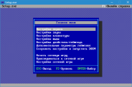

 Программа настроек Setup.exe
Программа для настройки игры. Внешний вид выполнен в соответствии программы настроек от оригинального Doom, предоставляю пользователю идентичную функциональность и дополнительные опции.
Программа основана на библиотеке libtextscreen. Более подробное англоязычное руководство представлено на сайте порта Chocolate Doom.
Главное меню
Все игровые настройки разделены на следующие категории:
- Настройки экрана - выбор полноэкранного оконного или режима и разрешения экрана, соотношения сторон экрана, отображение текстового экрана ENDOOM, значка дисковой активности (дискеты), а также оптимизации игровой палитры.
- Настройки звука - выбор источника игровых звуков и музыки.
- Настройки клавиатуры - настройка управления, назначение дополнительных клавиш и режима постоянного бега.
- Настройки мыши - настройка кнопок мыши, чувствительности, и режима отключения вертикального перемещения.
- Настройки джойстика/геймпада - настройка игровых контроллеров.
- Дополнительные параметры игры - настройка дополнительного функционала игры, такого как разноцветная кровь монстров, звук раздавливания трупов и других.
Запуск игр
Предусмотрено несколько вариантов запуска игры:
- Начать сетевую игру - настройка и запуск сетевой игры, к которой смогут присоединиться другие игроки.
- Присоединиться к сетевой игре - присоединиться к другой настроеной сетевой игре.
- Настройки сетевой игры - настройка имени в лобби сетевой игре.
- Уровень - перемещение на выбранный уровень с возможностью предварительной настройки игры.
|
{kind=link}